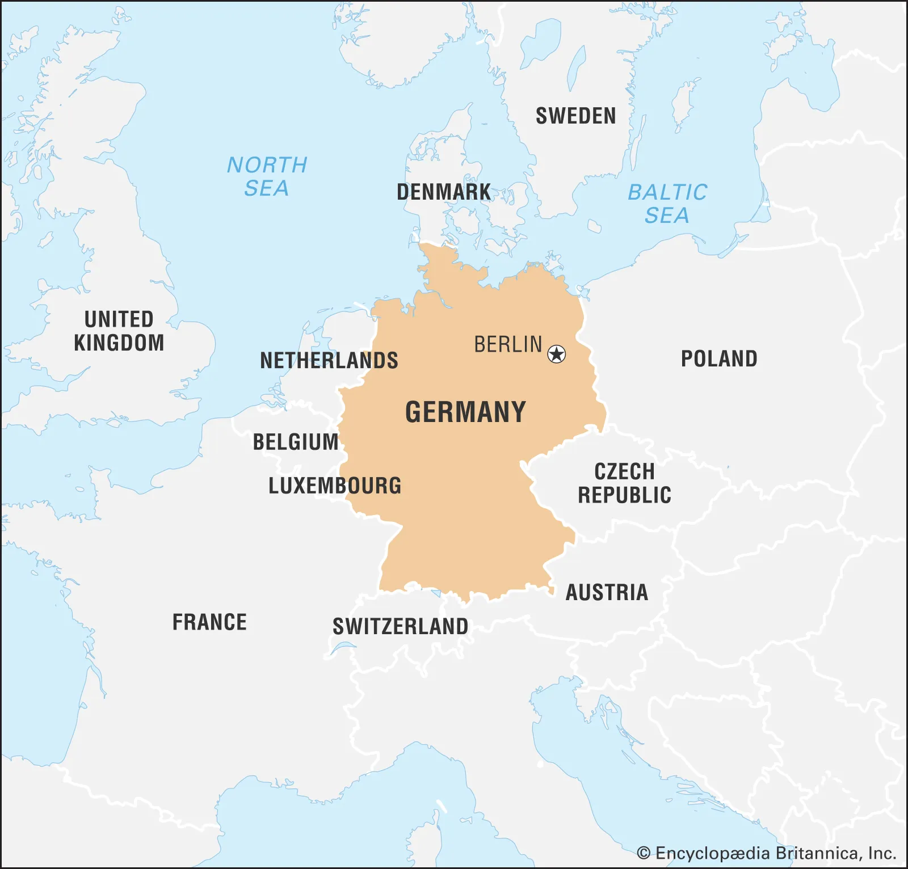

What is germany
MAP OF MODERN GERMANY

Germany is a central eroupean country that has borders with the following countries
Denmark(north)
luxembourg(west)
Belgium(west)
Netherlands(west)
France(west)
Switzerland(south)
Austria(south)
Czechia(east)
Poland(east)
Germany's captial is Berlin a historical city that was founded at 1237 A.D.
Germany has a history in all eras it was in from the Neolithic ages to the Roman Conquests and all the way in the cold war, WW1 and WW2.
During the roman conquest the ethic minorities in germany suppressed the roman army with assistance of the landscape.
GERMAN PRUSSIA
1870 A.D.
germany was also known as prussia during the 7 year war.
prussia is the 1st recognized nation of germany its capital is also Berlin.
Prussia is recognized for the Holy Roman Empire.
During the Napoleonic wars prussia was on the front stage just like in the 7 year war.
Prussia fell at 1947 after a long 422 year history from 1525 - 1947
GERMAN EMPIRE
January 18, 1871
The German Empire was the Empire responsible for the lost of WW1.
German Empire was a colonial nation. Tho it lost all of its colonies during WW1 due to allied invasion.
The Schlieffen Plan was plan by the Central Powers.
The Central Powers Lost after the plan failed with germany being the last surender at 11 November 1918.
With the lost of the Central Powers in WW1 the German Empire was blamed for the war and had commied may war crimes.
The German Empire was abolished after the signing of the Treaty Of Versailles.
The Germans couldn't have an airforce an army over 100k men and had to demilitarize the Rhineland and pay war reparations after the treaty was signed.
NAZI GERMANY(THE 3RD REICH)
PEAK OF THE NAZI GERMANY
The Nazi leader is Aldof Hitler which as known as the Führer of Germany
The Germany reich did everything the Empire failed to do but it did lose the war after a long war and lots of deaths on the german side.
1939-1940: 76,848
1940-1941: 140,378
1941-1942: 455,635
1942-1943: 413,009
1943-1944: 502,534
1944 (until November 30): 121,335
Germany was one of the members of the Axis which inculded its allies which are Imperial Japan, Imperial Italy, Romania and finland
WESTERN AND EASTERN GERMANY
BEFORE REUNIFICAION
Eastern Germany was Occipied by Soviet Russia(USSR) and the Western part was Occipied by the allies and later the USA soon to be given idependence at May 5, 1955
Both parts of germany share a part of Berlin Western Germany got western Berlin and Eastern Germany got Eastern Berlin
Back then poeple could have move from Eastern Berlin to Western Berling but one day the Soviets had made a wall known as the Berlin Wall
Made by Clarence Michael Lawrence Ting